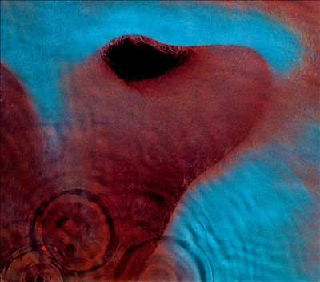

A estreia que apresentou ao mundo
o som sombrio, psicodélico e provocador do The Doors.
Mais experimental e obscuro,
mergulha em uma atmosfera estranha e quase hipnótica.

Um álbum marcado por contrastes,
entre a psicodelia, a poesia e o desejo de escapar.

O The Doors abandonaram parte da psicodelia
e retornam às raízes do blues e do rock.

O último álbum com Jim Morrison
transforma Los Angeles em cenário para um blues intenso
e sombrio.

Após a morte de Jim Morrison, em 1971,
os integrantes restantes lançaram Other Voices e Full Circle,
mas sem alcançar o mesmo impacto. Em 1973,
The Doors chegou ao fim, encerrando uma das bandas mais
marcantes do rock dos anos 60.
O primeiro hit de grande sucesso da banda foi "Light My Fire". Escrita pelo o guitarrista Robby Krieger.
Lançado em 1967 no álbum de estreia da banda, Auto intutulado "The Doors"
Uma grande curiosidade dessa apresentação no Ed Sullivan Show, É que Sullivan pediu aos
membros da banda para nao cantaram uma frase de um verso "higher", Jim Morrison ignora
e no tempo 0:26 podemos ver o guitarrista sorrindo, logo após o show eles foram expuslos do Ed Sulliva Show.
Uma das músicas mais marcantes de Strange Days."People Are Strange" foi escrita por Jim Morrison e Robby Krieger
e lançada em 1967 no segundo álbum da banda, Strange Days.A música nasceu durante um período difícil para Morrison.
Segundo Krieger, os dois estavam caminhando pelo Laurel Canyon, em Los Angeles, quando Morrison estava deprimido
e comentou que tudo parecia estranho. A experiência acabou servindo de inspiração para a música.A letra fala sobre alienação,
solidão e a sensação de enxergar o mundo de uma maneira diferente. O verso "People are strange when you're a stranger"
resume justamente essa sensação de não pertencer. Uma curiosidade é que a música se tornou uma das primeiras
grandes demonstrações da capacidade do The Doors de transformar experiências pessoais de Morrison em algo universal.
Um dos maiores mergulhos do The Doors no blues.
"Roadhouse Blues" foi lançada em 1970 no álbum Morrison Hotel
e mostra a banda deixando um pouco de lado a psicodelia dos primeiros trabalhos para explorar suas raízes no blues e no rock'n'roll.
A música foi escrita principalmente por Jim Morrison, com contribuições de Robby Krieger. Sua gravação contou ainda com músicos convidados, incluindo o guitarrista Lonnie Mack e o baixista Ray Neapolitan.
Um dos elementos mais marcantes é o riff de guitarra de Krieger, acompanhado pelo piano e pela gaita, criando uma sonoridade que lembra uma apresentação de blues em um bar.
A frase "The future's uncertain and the end is always near" se tornou uma das linhas mais lembradas de Morrison, refletindo a atmosfera de liberdade e imprevisibilidade que caracteriza a música.
O título faz referência a um roadhouse, um tipo de estabelecimento localizado próximo a estradas, normalmente associado a bares e música ao vivo.
A última viagem do The Doors com Jim Morrison. "Riders on the Storm" foi lançada em 1971 no álbum L.A. Woman e acabou se tornando a última música gravada pelo o The Doors com Jim Morrison. A música surgiu a partir de uma improvisação inspirada em "Ghost Riders in the Sky", de Stan Jones. A banda transformou a ideia em uma composição atmosférica, marcada pelo piano elétrico de Ray Manzarek, pela guitarra de Robby Krieger e pelos efeitos de chuva e trovões. Morrison gravou sua voz em duas camadas, uma principal e outra muito mais baixa, quase como um sussurro, criando a sensação de que existe uma segunda voz dentro da música. A letra apresenta imagens de tempestades, estradas e um misterioso "assassino na estrada". Essa atmosfera sombria fez da música uma espécie de despedida involuntária. Pouco depois das gravações, Morrison deixou Los Angeles e foi para Paris. Ele morreu em 3 de julho de 1971, aos 27 anos. "Riders on the Storm" permaneceu como o último lançamento do The Doors com Morrison e uma das músicas mais reconhecidas da banda.